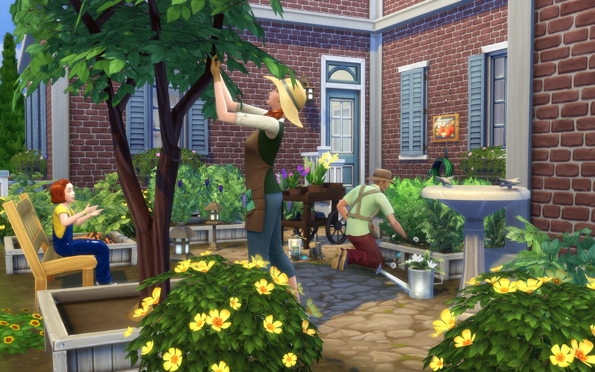
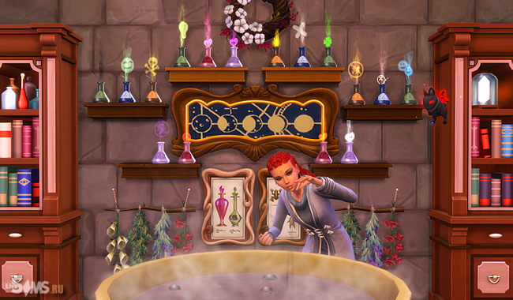

Тайны знахарства
В дополнении "Волшебство природы" ваши симсы могут освоить древнее искусство знахарства, открывающее мир магических возможностей.

Сбор трав
Исследуйте мир в поисках редких и волшебных растений. Каждое растение обладает уникальными свойствами.

Приготовление зелий
Создавайте мощные зелья, которые могут исцелять, накладывать проклятия или даже изменять судьбу.
Магическая лавка
Откройте собственную лавку зелий и продавайте свои творения другим симам.
Навык знахарства
По мере развития навыка ваши симсы смогут:
- Разблокировать редкие рецепты
- Создавать более мощные зелья
- Открывать секретные ингредиенты
- Обучать других симов искусству знахарства